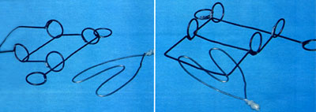
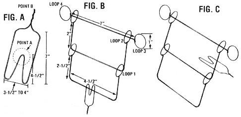

Distract and delight your friends and family on the long, cold winter's night with...
When the days are short and the nights are cold, evenings at home all too often seem to consist of little more than stoking the fire in the old woodburner. And although the warmth of the flames provides physical comfort, you may well find yourself craving a bit of mental stimulation as you while away the hours indoors.
The little brainteaser shown here is simple to assemble, requires only common tools and materials, and is guaranteed to provide both challenge (when you try to figure out how to separate the heart- shaped piece from the other) and pleasure (when your victims attempt to solve the puzzle while you smugly watch)!
A TWIST HERE, A TURN THERE
To create your own brain-boggier, gather together three or four wire coat hangers, a couple of pairs of stout pliers, and a cylinder-a socket from a wrench set, for example-about one inch in diameter.
Cut the coat hangers and bend and assemble them as indicated in Figs. A and B below. Form the loops around whatever cylindrical object you've selected to use for that purpose, and create the heart- shaped piece by any method you choose. (I just use my hand as a pattern . . . shaping the wire around my fingers.) I recommend that you lightly weld, epoxy, wire, or tape both the loops and the heart piece closed ... to strengthen the toy and to discourage cheating.
I've gotten a great deal of pleasure from making these no-cost bafflers for my friends and family ... and in almost 20 years I've never seen anything else like them. Go ahead and take a crack at solving the puzzle, and then-if all else fails-see the accompanying sidebar for the solution!
Caution! Read this only as a last resort!
The Simple (?) Solution
If you're scanning over these words, you're no doubt so frustrated and perplexed by this mind-bender that you've got a pair of wire snippers on stand-by. Well, try to stifle the urge to resort to such ignoble force, because the system's not impossible to beat!
First off, look at Figs. A and B to identify the parts of the puzzle so you'll understand the directions (left-handed persons will want to move Loops 1, 2, and 3 to the left side of the drawing, and Loop 4 to the right side, and continue from there).
Begin by grasping the heart of the puzzle at Point B with one hand, and the main part at Loop 4 with the other. Now, place Point A through Loop 1 .. . slide Loop 3 down through Point A ... and work Point A so that it's "inboard" of Loop 2. Then push Point A through Loop 2 and over Loop 3. Move the heart-shaped piece straight "inboard", and your puzzle should look like Fig. C.
To complete the maneuver, put Point A through Loop 2, then put Loop 3 through Point A and push "inboard" . . . you're home free!
You can return the heart to its original position by working the solution backwards. Doing so is a tad easier said than done, but some practice (and patience) should see you through.
|
 |
 |
|